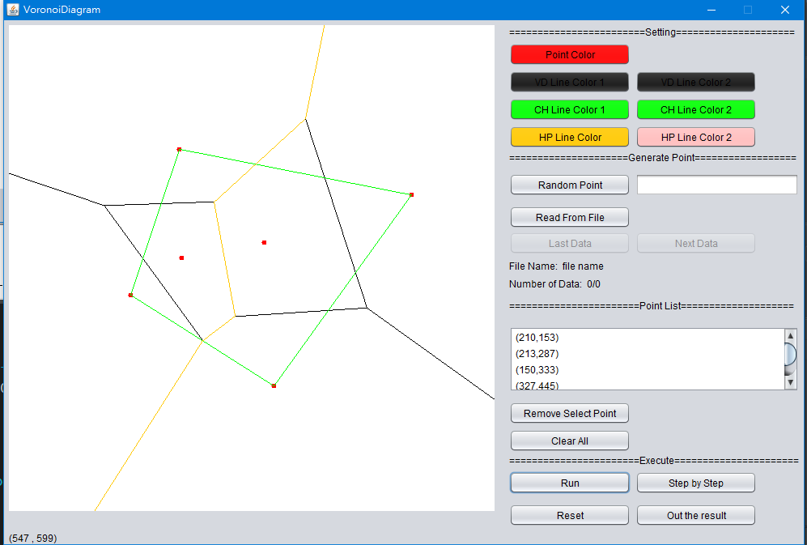
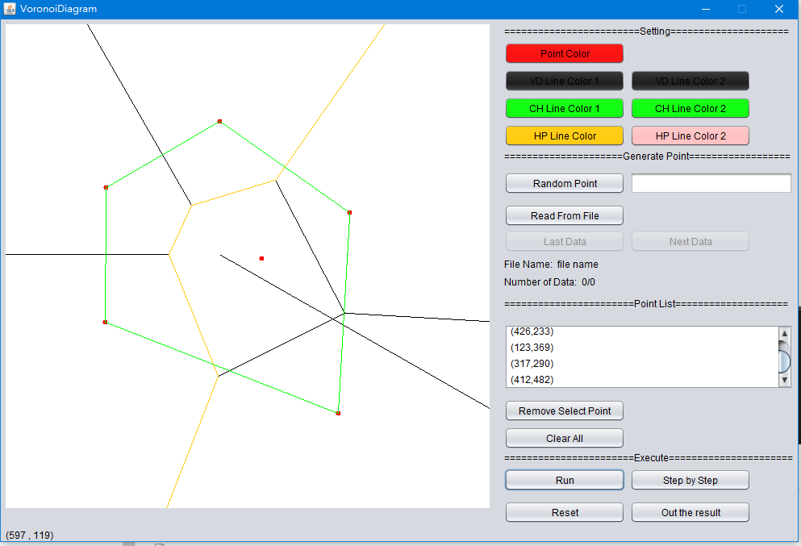
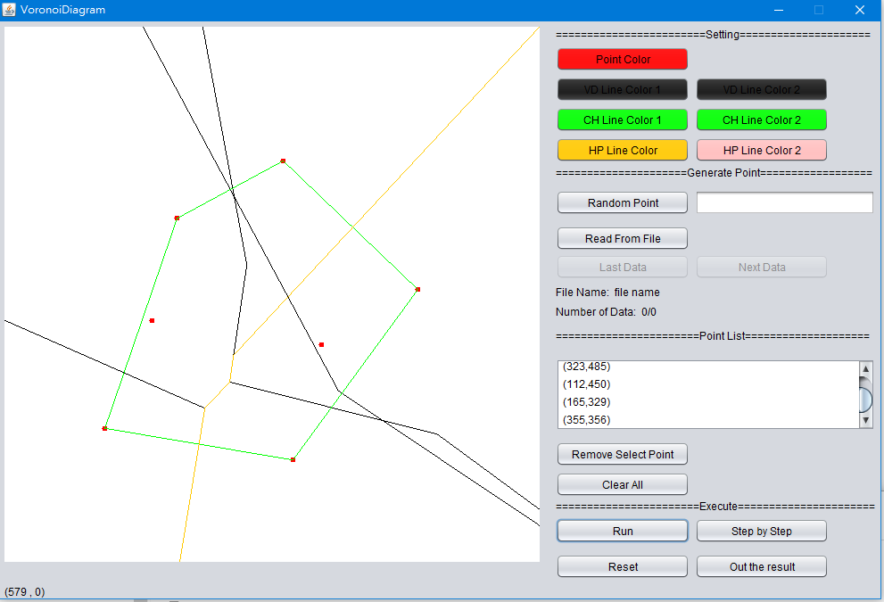

軟體測試與實驗結果
系統環境
- 作業系統:Windows 10 64位元
- 處理器:Intel(R)Core(TM)i7-7700K CPU @4.20GHz
- 記憶體:16.0GB
可執行情況

- Voronoi Diagram 目前最高"6"點可正常顯示
無法執行情況
- 線段無法消除: Voronoi Diagram 目前最高"6"點可正常顯示，但有些情況會無法消除一些多於線段，如下圖測資(測資下載)

- 焦點在邊界外: Voronoi Diagram則無法正常顯示，受限於線段資料結構的關係，本程式會將無限遠的線做裁切，以控制現在畫布中，進而使演算法無法判斷此線段是無限遠的一條線或是一個線段，進而使在做Merge的情況下發生錯誤。(測資下載)
- 7點以上: 七點以上因為線段資料結構上，無法判斷是否為線段或是無限延伸的線，導致程式錯誤。(測資下載)

- Convex Hull :超過一百點都可正常顯示(未加入Voronoi Diagram時測試)，但是因程式結構關係影響，Voronoi Diagram六點以上就會出錯，導致整個Convex Hull圖形無法畫出
解決方法
- 線段無法消除: 重新審視資料結構，避免有些線段沒有檢查。
- 焦點在邊界外: 須重新設計線的資料結構，以區分線段及無限延伸的線的區別。
- 7點以上: 須重新設計線的資料結構，以區分線段及無限延伸的線的區別。
- Convex Hull:如果Voronoi Diagram與Convex Hull在不同函式執行就可避免此種情形